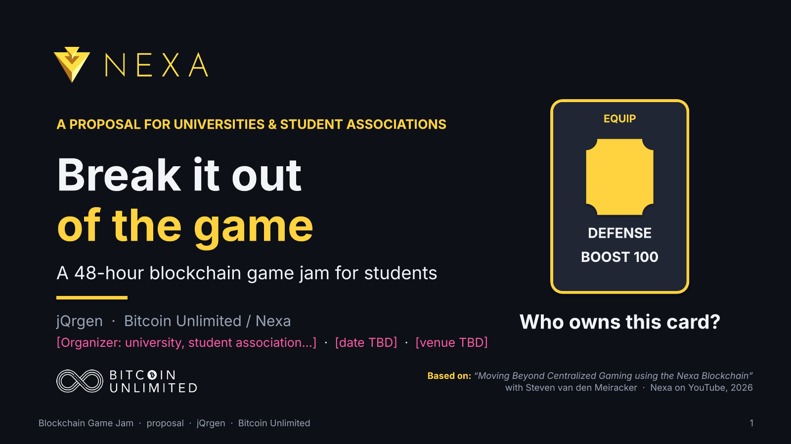

← → to move between slides · N toggles notes · F for fullscreen
Speaker notes
[STAGE: hold up ONE printed playing card - the "Defense Boost 100" equip card from the Nexa Warriors demo. Say nothing for 3 seconds.] HOOK: "Someone earned this card. Tonight's question is simple: who owns it - the player, or the game?" [PAUSE] - Introduce yourself: jQrgen, Bitcoin Unlimited, working on the Nexa blockchain. [Optional: your connection to the [Organizer] - add if relevant.] - One-sentence pitch: a 48-hour game jam where students at [Organizer] build games whose items belong to the players and can leave the game. - This card is our running example. It shows up on almost every slide: locked in a game, then in a wallet, then in a brand-new game built at the jam. - Pink text = a placeholder we still need to fill in together (Organizer, date, venue, budget). The 'Based on' line on the slide credits the source video; the last slide repeats it with a QR code. Source for the whole deck: "Moving Beyond Centralized Gaming using the Nexa Blockchain: with Steven van den Meiracker", Nexa YouTube channel, uploaded 10 Jul 2026 (https://www.youtube.com/watch?v=NHAPE0JRhCM). Webinar hosted by Danielle at EvolvH3R. The card "Defense Boost 100" appears in the demo at 00:29:25.